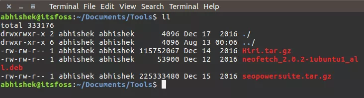
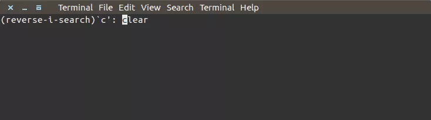
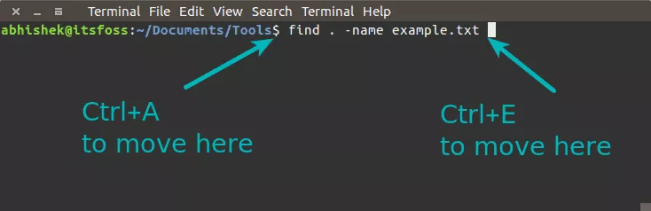
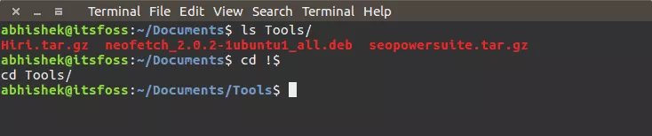
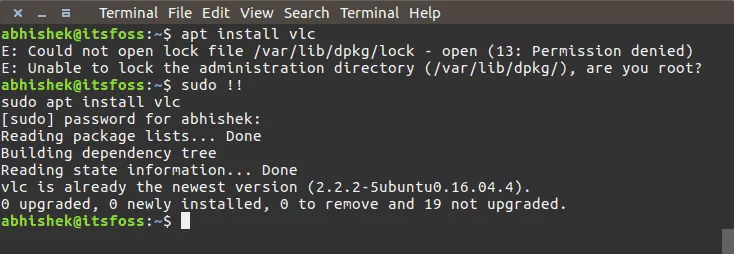

| HackieTech |
Don't fear the Technology
I’ll start with something really obvious and yet really important: tab completion.
When you are starting to type something in Linux terminal, you can hit the tab key and it will suggest all the possible options that start with string you have typed so far.
For example, if you are trying to copy a file named my_best_file_1.txt, you can just type ‘cp m’ and hit tab to see the possible options.
You can use tab in completing commands as well.
Suppose you end up in a long directory path and then you move to another directory in a totally different path. And then you realize that you have to go back to the previous directory you were in. In this case, all you need to do is to type this command:
cd -This will put you back in the last working directory. You don’t need to type the long directory path or copy paste it anymore.
This is way too obvious. You can use the command below to move to your home directory from anywhere in Linux command-line:
cd ~However, you can also use just cd to go back to home directory:
cdMost modern Linux distributions have the shell pre-configured for this command. Saves you at least two keystrokes here.
You must be guessing what’s the trick in the command for listing the contents of a directory. Everyone knows to use the ls -l for this purpose.
And that’s the thing. Most people use ls -l to list the contents of the directory, whereas the same can be done with the following command:
llAgain, this depends on the Linux distributions and shell configuration, but chances are that you’ll be able to use it in most Linux distributions.
Suppose, you have to run several commands one after another. Do you wait for the first command to finish running and then execute the next one?
You can use the ‘;’ separator for this purpose. This way, you can run a number of commands in one line. No need to wait for the previous commands to finish their business.
command_1; command_2; command_3In the previous command, you saw how to run several commands in one single command to save time. But what if you have to make sure that commands don’t fail?
Imagine a situation where you want to build a code and then if the build was successful, run the make?
You can use && separator for this case. && makes sure that the next command will only run when the previous command was successful.
command_1 && command_2A good example of this command is when you use sudo apt update && sudo apt upgrade to upgrade your system.
Imagine a situation where you used a long command couple of minutes/hours ago and you have to use it again. Problem is that you cannot remember the exact command anymore.
Reverse search is your savior here. You can search for the command in the history using a search term.
Just use the keys ctrl+r to initiate reverse search and type some part of the command. It will look up into the history and will show you the commands that matches the search term.
ctrl+r search_termBy default, it will show just one result. To see more results matching your search term, you will have to use ctrl+r again and again. To quit reverse search, just use Ctrl+C.
Note that in some Bash shells, you can also use Page Up and Down key with your search term and it will autocomplete the command.
You probably are habitual of using Ctrl+S for saving. But if you use that in Linux terminal, you’ll have a frozen terminal.
Don’t worry, you don’t have to close the terminal, not anymore. Just use Ctrl+Q and you can use the terminal again.
ctrl+QSuppose you are typing a long command and midway you realize that you had to change something at the beginning. You would use several left arrow keystrokes to move to the start of the line. And similarly for going to the end of the line.
You can use Home and End keys here of course but alternatively, you can use Ctrl+A to go to the beginning of the line and Ctrl+E to go to the end.
I find it more convenient than using the home and end keys, especially on my laptop.
In situations where you need to analyze the logs while the application is running, you can use the tail command with -f option.
tail -f path_to_LogYou can also use the regular grep options to display only those lines that are meaningful to you:
tail -f path_to_log | grep search_termYou can also use the option F here. This will keep the tail running even if the log file is deleted. So if the log file is created again, tail will continue logging.
Server logs are usually gzip compressed to save disk space. It creates an issue for the developer or sysadmin analyzing the logs. You might have to scp it to your local and then extract it to access the files because, at times, you don’t have write permission to extract the logs.
Thankfully, z commands save you in such situations. z commands provide alternatives of the regular commands that you use to deal with log files such as less, cat, grep etc.
So you get zless, zcat, zgrep etc and you don’t even have to explicitly extract the compressed files. Please refer to my earlier article about using z commands to real compressed logs in detail.
This was one of the secret finds that won me a coffee from my colleague.
To see the contents of a file, cat is not the best option especially if it is a big file. cat command will display the entire file on your screen.
You can use Vi, Vim or other terminal based text editors but if you just want to read a file, less command is a far better choice.
less path_to_fileYou can search for terms inside less, move by page, display with line numbers etc.
Using the argument of the previous command comes handy in many situations.
Say you have to create a directory and then go into the newly created directory. There you can use the !$ options.
A better way to do the same is to use alt+. . You can use . a number times to shuffle between the options of the last commands.
You can call the entire previous command with !!. This comes particularly useful when you have to run a command and realize that it needs root privileges.
A quick sudo !! saves plenty of keystrokes here.
You probably already know what is an alias command in Linux. What you can do is, to use them to fix typos.
For example, you might often mistype grep as gerp. If you put an alias in your bashrc in this fashion:
alias gerp=grepThis way you won’t have to retype the command again.
This one is slightly ambiguous because it depends on Linux distributions and terminal applications. But in general, you should be able to copy paste commands with these shortcuts:
If there are some commands or scripts that need user interaction and you know that you have to enter Y each time it requires an input, you can use Yes command.
Just use it in the below fashion:
yes | command_or_scriptIf you just want to empty the contents of a text file without deleting the file itself, you can use a command similar to this:
> filenameThere are multiple ways to search and find in Linux command line. But in the case when you just want to see if there are files that contain a particular text, you can use this command:
grep -Pri Search_Term path_to_directoryI highly advise mastering find command though.
I’ll conclude this article with one more obvious and yet very important ‘trick’, using help with a command or a command line tool.
Almost all command and command line tool come with a help page that shows how to use the command. Often using help will tell you the basic usage of the tool/command.
Just use it in this fashion:
command_tool --helpThis one is perhaps way too obvious. If there is a command running in the foreground and you want to exit it, you can press Ctrl+C to stop that running command.